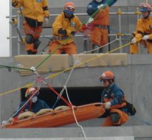

2012年12月14日、大阪大学のグローバルコラボレーションセンター主催の「防災・災害復興と国際協力」セミナーに所長の渡部が参加し、「国際人道システムと国連の役割」と題した基調講演を行いました。
また、国際復興支援プラットフォームの川脇康生氏をモデレーターに、世界銀行の石渡幹夫氏、兵庫県防災監の杉本明文氏らと共にパネルディスカッションも行いました。
詳しくはこちらをご覧下さい。
2012年11月28日神戸にて、国際協同組合同盟アジア太平洋地域（ICA-AP）、日本協同組合連絡協議会（JJC）、2012国際協同組合年（IYC）全国実行委員会共催により、「災害時における協同組合の役割」についてのフォーラムが開催され、所長の渡部が「災害時における市民社会の役割」と題した基調講演を行いました。
2012年11月27日から12月1日まで、兵庫県三木市の広域防災センターで、国際協力機構(JICA)の国際緊急援助隊(JDR)救助チームの模擬訓練が行われました。これは、海外の大規模災害へ派遣されるJDR救助チームが、被災国からの要請に応えて迅速かつ効果的に捜索救助活動を行えるよう、年1回行っているものです。
実際の派遣を想定した48時間連続シミュレーションの一部に、所長の渡部も参加し、英文での記事にまとめて配信しました。（日本語訳はこちらをご覧下さい。）
2012年11月19日付けで、日経新聞夕刊に連載されている「先輩の肖像ー10年後の君たちへ」のシリーズに所長の渡部が取り上げられました。
記事はこちらからご覧いただけます。
2012年11月16日、立教大学と難民を助ける会(AAR)が主催する「人道支援と危機管理」セミナーに所長の渡部がパネリストとして参加し、日本赤十字社のの加藤安孝氏、難民を助ける会の堀江良彰氏らと共に、大災害や紛争の現場で、人道支援要員の安全をどう確保し、どこまで活動するのかについて、活発な議論を行いました。
2012年11月2日、津田塾大学の千駄ヶ谷キャンパスにて、「国連機関への道」と題したキャリアセミナーが開催され、所長の渡部が「国際人道支援の立場から」と題した講義を行いました。
2012年10月11日神戸で、人と防災未来センターが10周年を迎えるのを記念して「減災社会への連携」と題した公開フォーラムが開催されました。
OCHAからはアジア太平洋地域事務所長のオリバー・レイシー=ホールが、「アジア･太平洋地域における大規模自然災害時の国際緊急支援--その特徴と課題」と題した講演を行いました。
2012年9月3-6日、神奈川県の湘南国際村センターにおいて、「地球社会は多様な人道危機にどう取り組むか」についての国連大学グローバルセミナーが開催されました。所長の渡部は「人道支援における国連の役割と人間の安全保障」というセッションにおいて、「国際人道支援システムと国連の役割」と題した講義を行いました。日本の大学に在籍する学部生、大学院生、留学生など百名弱の若い参加者を迎え、活発な議論が行われて修了しました。
プログラムはこちらをご覧下さい。
2012年8月19日の「世界人道の日」に向けて、ビヨンセさんが中心となって"I Was Here"キャンペーンを展開しました。これは人道支援活動にスポットを当てながら「誰かのために何か良いことをしよう」と世界中の人々に働きかけるもので、2012年はソーシャルメディアを使って展開し、世界中で10億人以上の参加を達成することが出来ました。日本でも国連広報センターをはじめ、多くの国連機関、関連機関が協力して下さいました。
7月5日、日本赤十字看護大学（東京都渋谷区）において、「国際人道支援セミナー：東日本大震災の経験から～より良い国際支援の担い手を目指して」を開催することになりました。